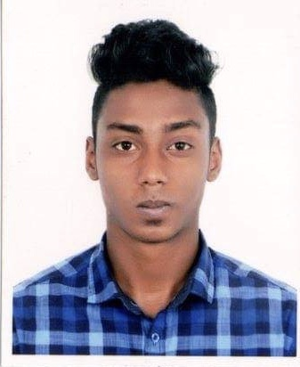

Hussam Rashid

Summary
I have ability to work in teams & maintain effective communication. I can quickly
learn the necessary details of Work. I have excellent ability to adjust in any academic
and practical life situations. I have outstanding communication skills & ability to
interact well with sub-ordinate work force.
Career Objective:-
To work in a challenging and competitive environment where a strong sense of
responsibility and commitment is required; where dignity of work provides job
satisfaction, and work environment provides potential avenues for learning, growing,
and reaching the highest level in the organization.
Education
Business Administration
- Graduate of A-Level examinations from Bangladesh International School- Jeddah,
Saudi Arabia.
Skills
- Excellent verbal and oral communication skills
- Fluent in the English, Bengali, Arabic, Urdu and Hindi
- Diligent team player with initiative
Work Experience
Centerpoint Jeddah, Saudi
Arabia
Garment Salesman
- Shared new products and promotions with customer to encourage sales.
- Met sales targets through proactive promotion and excellent customer service.
La Coste resort, Saudi Arabia
Supervisor
- Trained staff in till management practices including reviewing and reconciling daily
transactions.
Danube, Saudi Arabia
Cashier
- Handled high-volume credit and cash transactions using Point Of Sale (POS)
systems efficiently.
Ad agency, Bangladesh
Graphics Designer
- Created eye-catching social, digital and print marketing campaigns, enhancing
brand awareness and reputation.
- Demonstrated expertise in Photoshop, Illustrator and InDesign to create innovative,
original graphics.
Awards and Certifications
- Certificate for most profitable business in "Business Week event-2014" held at
Bangladesh International School-Jeddah, Saudi Arabia.
- Certificate for completing Graphic Designing course Online.
Others